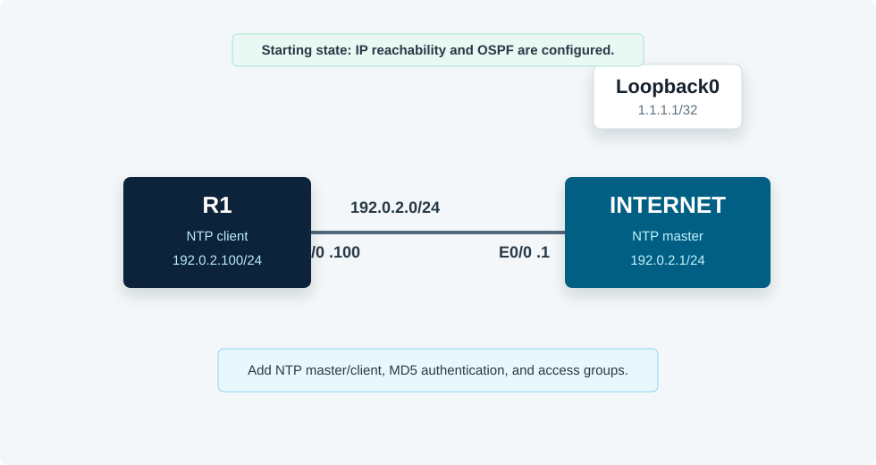

Overview
This lab secures a basic NTP relationship. The INTERNET router acts as an NTP master, and R1 synchronizes to the INTERNET loopback address. You will add MD5 NTP authentication, trusted keys, a keyed NTP server statement, and NTP access groups to restrict which devices can serve or peer for time.
All commands in this guide use the CML Ethernet interface names shown in the topology.
Topology
R1 and INTERNET share 192.0.2.0/24. INTERNET advertises Loopback0 1.1.1.1/32 with OSPF so R1 can use 1.1.1.1 as the NTP server address.

Task 1: Verify IP Reachability
Before configuring NTP, prove R1 can reach the server loopback and that both routers have OSPF reachability.
! R1
show ip interface brief
show ip route ospf
ping 1.1.1.1
! INTERNET
show ip interface brief
show ip ospf neighborTask 2: Configure Basic NTP
Configure the INTERNET router as the lab time source and point R1 to the INTERNET loopback. The clock set command is an EXEC command, not a startup configuration line, so run it from privileged EXEC.
! INTERNET
clock set 12:00:00 June 28 2024
conf t
clock timezone UTC 0
ntp master 3
end
! R1
conf t
ntp server 1.1.1.1
clock timezone EST -5
clock summer-time EDT recurring
endNTP may take several minutes to fully synchronize. Use the association output while waiting.
Task 3: Add NTP Authentication
Configure key 1 with the same MD5 string on both routers. Then require authentication on the server and client, and update R1's server statement to use key 1.
! INTERNET
conf t
ntp authentication-key 1 md5 $3creT
ntp trusted-key 1
ntp authenticate
ntp master 3
end
! R1
conf t
ntp authentication-key 1 md5 $3creT
ntp trusted-key 1
ntp authenticate
ntp server 1.1.1.1 key 1
endKey numbers do not have to match between devices, but the server statement must reference a locally trusted key whose secret matches what the server uses.
Task 4: Restrict Who the Server Serves
On INTERNET, create a standard ACL that permits R1's outgoing source address and apply it as a serve-only NTP access group.
! INTERNET
conf t
ip access-list standard NTP-CLIENT
permit 192.0.2.100
exit
ntp access-group serve-only NTP-CLIENT
end
show access-lists NTP-CLIENT
show running-config | section ntpExpected behavior: INTERNET serves time only to the permitted NTP client source address.
Task 5: Restrict the Client's NTP Peer
On R1, permit only the NTP server address and apply it as an NTP peer access group.
! R1
conf t
ip access-list standard NTP-SERVER
permit 1.1.1.1
exit
ntp access-group peer NTP-SERVER
end
show access-lists NTP-SERVER
show running-config | section ntpTask 6: Verify Secure NTP Operation
Verify synchronization, stratum, selected reference, authentication, and access-group configuration. R1 should synchronize to 1.1.1.1 and show stratum 4 because INTERNET is configured as stratum 3.
! R1
show ntp status
show ntp associations
show ntp associations detail
show running-config | section ntp
! INTERNET
show ntp status
show ntp associations
show running-config | section ntpIf R1 does not synchronize, inspect reachability to 1.1.1.1, key trust, the key used in the server statement, and whether the server ACL permits R1's source address.